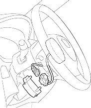
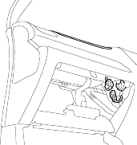

- Erase the DTC memory (see page 23-38).
Does the SRS indicator light go off while the DTC memory is erased?
YES - Go to step 42.
NO - Go to step 2.
- Check the No. 13 (10A) fuse in the under-dash fuse/relay box.
Is the fuse OK?
YES - Go to step 19.
NO - Go to step 3.
- Replace the No. 13 (10A) fuse in the under-dash fuse/relay box.
- Turn the ignition switch ON (II) and wait for 30 seconds. Then turn the ignition switch OFF.
- Check the No. 13 (10A) fuse in the under-dash fuse/relay box.
Is the fuse OK?
YES - The system is OK at this time. 
NO - Go to step 6.
- Replace the No. 13 (10A) fuse in the under-dash fuse/relay box.
- Disconnect the battery negative cable and wait for 3 minutes.
- Disconnect the D1o connector.

- Disconnect the P1o connector.
